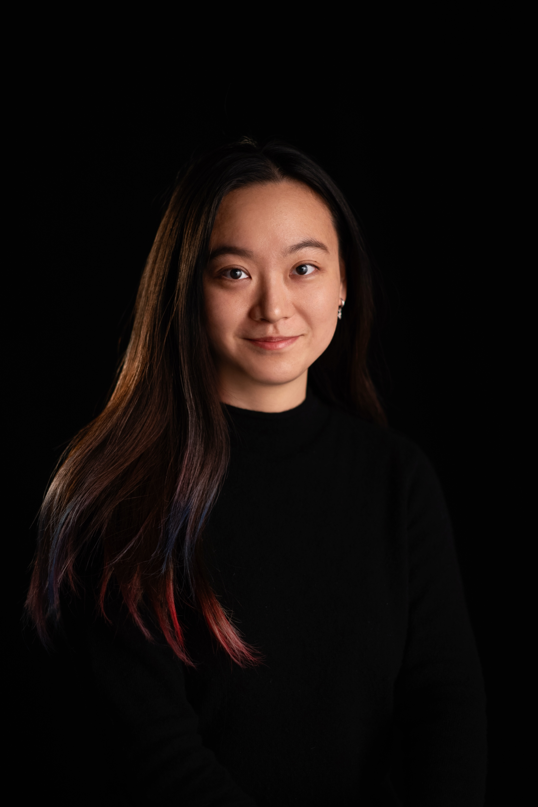

Puzhen Zhang is a Chinese animation director working in stop-motion animation. She holds an MFA in Directing Animation from the National Film and Television School.
Her work includes Deep End, Rabbit, Reincarnation, and Noise Reduction. Her latest film, Deep End, explores experimental approaches to 3D-printed puppetry, combining diverse materials to simulate water-based visual effects.
Her films often balance humour and emotional depth, operating in the subtle space between memory and self-reflection. Through a hands-on and exploratory practice, she continuously experiments with materials and techniques, embracing an intuitive and process-driven approach to animation-making.